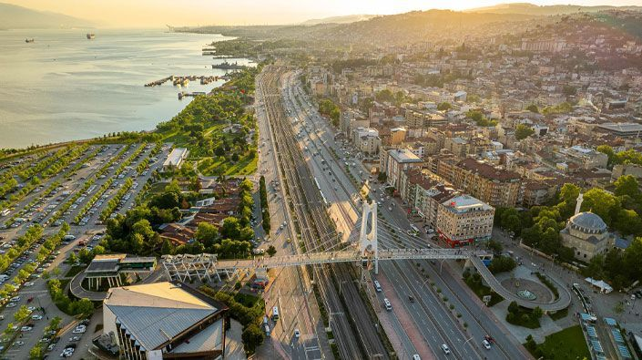

KOCAELI
Şehrin Nüfusu
Kocaeli, Türkiye'nin bir ili ve en kalabalık onuncu şehridir. Şehir, ülkenin en büyük sanayi ve ticaret kentlerinden biridir. Kocaeli; SEGE-2011 sıralamasına göre İstanbul, Ankara ve İzmir'den sonra en gelişmiş şehirdir. 2022 itibarıyla 2.033.441 kişilik nüfusa sahiptir.
Şehrin Tarihçesi
Kocaeli, ilk çağlarda Bitinya adı verilen bölgede yer almaktadır. Megara ve Atinalılar körfezde bugün Başiskele ilçesinin bulunduğu bölgede MÖ 712'de Astakus adlı bir yerleşim kurmuş kent daha sonra Skylax kenti ve körfezi Olbia olarak anmıştır. Pausanias, Astakus'u Trakyalı bir soylunun adı olarak anarken Yunan mitolojisinde deniz tanrısı Poseidon ile su perisi Olbia'nın oğlunun aynı adı taşıdığı bilinmektedir. Astokus halkı MÖ 262 yılında bugünkü İzmit ilçesinin yer aldığı bölgeye yerleşmiştir. I. Nikomidis tarafından kurulduğu için bu şehre Nicomedia adı verilmiştir. Bitinya Krallığı yıkılıncaya kadar ülkenin başkenti olarak kalmıştır.
Şehrin Tarihi Yerleri
Kocaeli, tarihiyle de ön plana çıkan bir şehirdir. Nicomedia’dan Roma’ya, Selçuklular’dan Osmanlı Devleti’ne kadar birçok uygarlığı bünyesinde barındırmış; kültürünü korumuş, halen daha yapılan kazılarda tarihe dair izleri ortaya çıkarmaktadır. Kocaeli’de görülmesi gereken tarihi yerlerin bu kadar çok olmasının sebebi, halkın ve yönetimlerin tarihine sahip çıkmasından kaynaklanmaktadır.
Hannibal Anıt Mezarı

Mezarı Gebze’de bulunan Hannibal Anıt Mezarı, MÖ 247-MÖ 183 yılları arasında yaşamış, bugünkü adıyla Gebze olarak bilinen ilçede intihar eden dünyaca ünlü bir komutandır. İntiharı, Britanyalılar tarafından Roma İmparatorluğu’na teslim edileceğini öğrenmesiyle yaşanmıştır. Mustafa Kemal Atatürk’ün emriyle mezarı bulunmuş ve bir anıt dikilmiştir.
İzmit Saat Kulesi
Kocaeli’nin İzmit ilçesinde, akla ilk gelen yapılardan birisi İzmit Saat Kulesi olmaktadır. Osmanlı Devleti’nden kalma bilinen eserlerden en çok ön plana çıkanı İzmit Saat Kulesi olmuştur.
Kule, bünyesinde üç adet çeşmeyi barındırmakta, tren garına yakın olması ve kent merkezinde yer alması nedeniyle sık ziyaret edilen bir yer haline gelmiştir.
Sırrı Paşa Konağı
Kocaeli’nin tarihi yerlerinden bir diğeri de Sırrı Paşa Konağı’dır. Dönemin İzmit Mutassarrıfı Sırrı Paşa tarafından yaptırılan Sırrı Paşa Konağı, birçok kültürel değeri de bünyesinde barındırmaktadır. Zaman içerisinde yıkıma uğramışsa da restorasyon çalışmalarıyla günümüze kazandırılmıştır.
Körfez manzarasıyla ön plana çıkan konak, içerisinde haremlik ve selamlık olmak üzere iki bölümden oluşmaktadır.
Kocaeli Arkeoloji ve Etnoğrafya Müzesi

Nicomedia’dan Kocaeli’ye bütün bir tarihin izlerini görebileceğiniz Arkeoloji ve Etnoğrafya Müzesi, döneme ışık tutan müzelerden birisidir. Paleolitik, Helenistik, Roma, Bizans ve Osmanlı dönemlerine ait eserlerin sergilendiği müze, Kocaeli’de yaşayan vatandaşlar tarafından oldukça ilgi görmektedir.
Kaiser Wilhelm Köşkü
Kocaeli, Osmanlı Dönemi’nde ticari ve refah seviyesi açısından en yüksek dönemini yaşamıştır. Yurt dışından gelen misafirlerin ağırlanması için de tercih edilen kent, 1884 yılında Alman İmparatoru Kaiser Wilhelm’in ziyareti sırasında konaklaması için günümüzde Hereke’de yer alan Kaiser Wilheim Köşkü yaptırılmıştır.
Kocaeli'nin yöresel yemekleri
Kentler, kültür ve sanatında bir Anadolu geleneği olarak yöresel yemekleriyle ön plana çıkarlar. Kocaeli’ne özgü yemek kültürü, şehre artı bir değer katmıştır. Özellikle kentte bir kültür haline gelen ‘Pişmaniye’, kente özgür bir tatlı türü olarak ün kazanmıştır. Şehirlerden geçenlerin veyahut gelenlerin en çok aklına gelen şey genelde pişmaniyedir. Ayrıca, kente özgü “Değirmendere fındığı”, “Yarımca kirazı”, “Kandıra yoğurdu” ve “İzmit pişmaniyesi”, “İzmit simidi”, “Maşukiye armudu”, “Eşme ayvası”, kendin bilinen en önemli tatlarıdır.